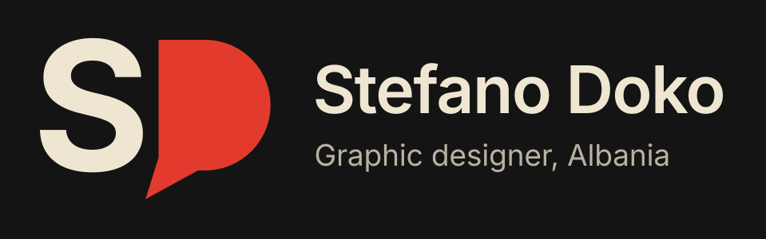
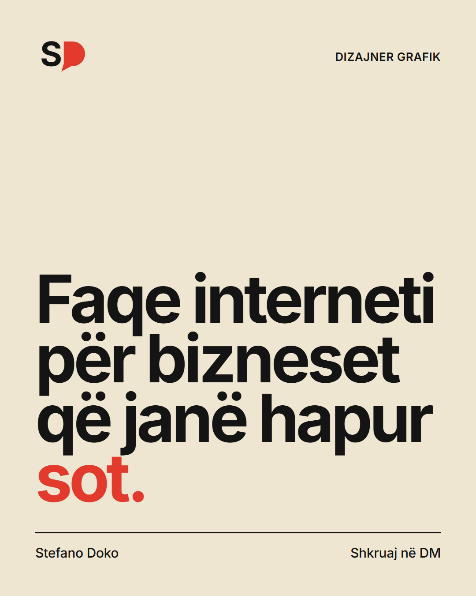
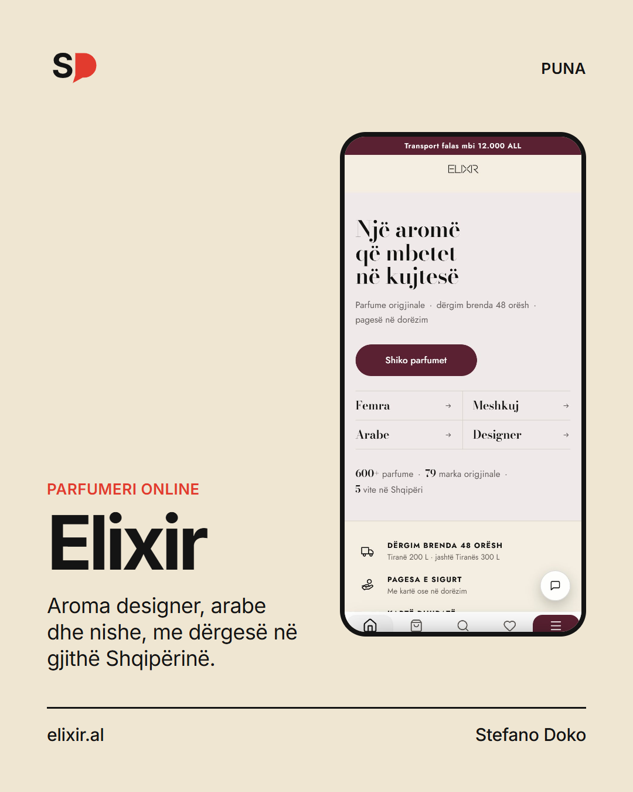
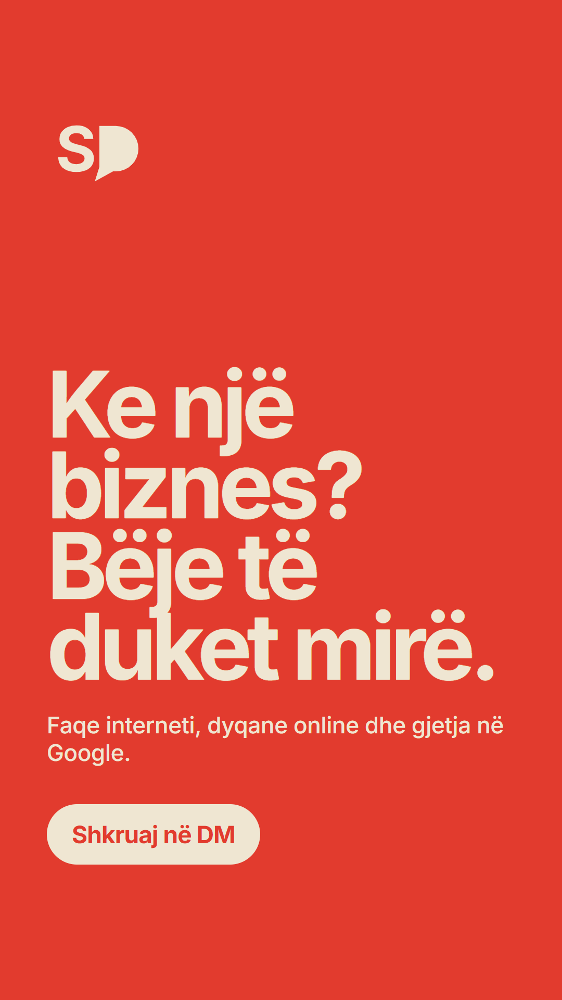
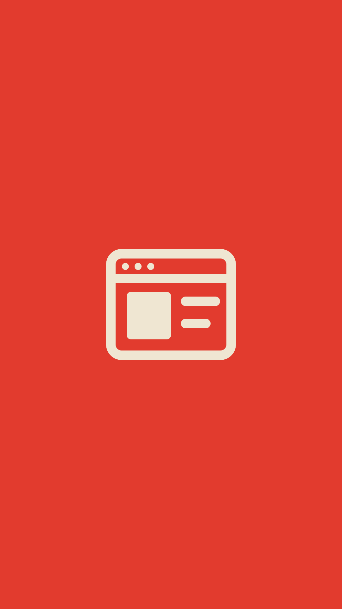
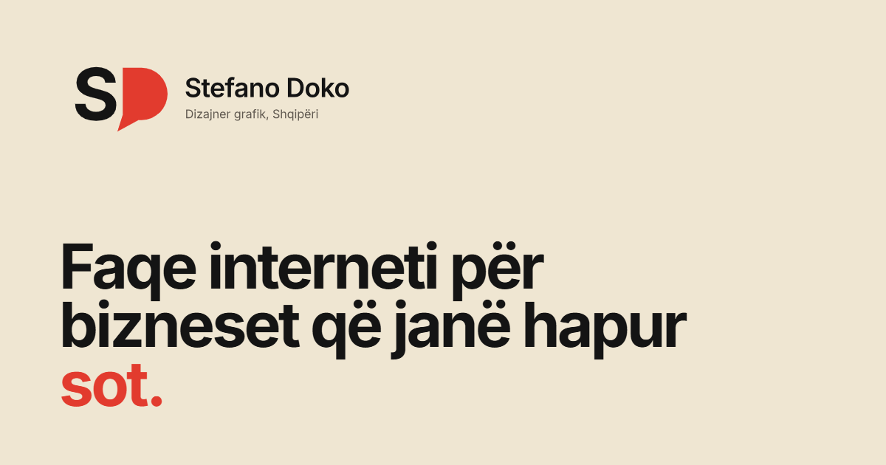
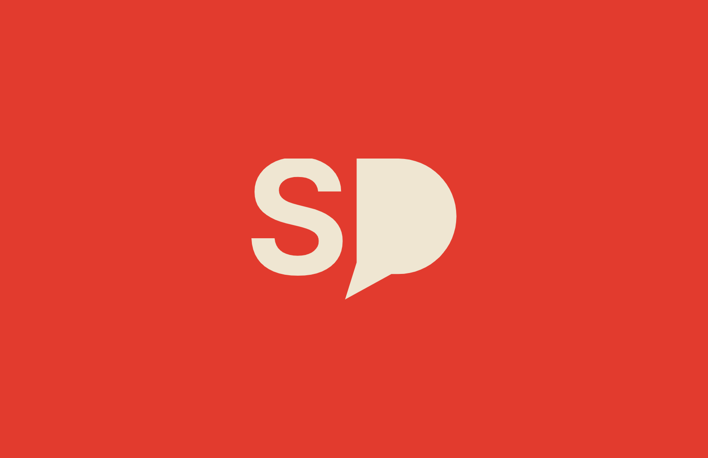
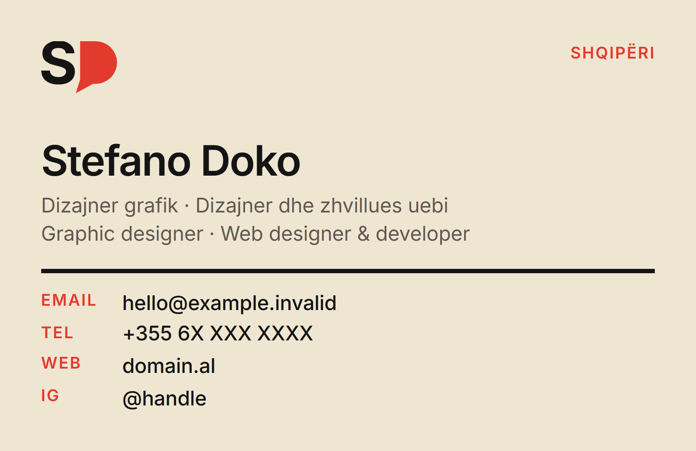

One mark, one typeface, three colours, used the same way on the website, Instagram, print and email. The mark says the initials and the one thing the site asks of you: write to him. Everything around it stays plain, so the mark is what people remember.
| Simple, solid, reducible | Paul Rand, Sagi Haviv | Two solid shapes, no outlines, gradients or thin lines. It must read in one colour and as a 16 px tab icon. |
| Plain type, one twist | Michael Bierut | The S is an ordinary bold S. The twist is the D: it is a speech bubble, because the whole site asks you to write to Stefano. |
| One typeface, one grid, few colours | Massimo Vignelli, Experimental Jetset | Inter only. Red, ink and cream only. Everything is measured on the S’s cap height; clear space is a quarter of it. |
| Everything else stays quiet | Massimo Vignelli | The name is set plainly, never styled. Only the mark carries an idea. |
| In use, type is the image | Paula Scher | Posts and stories use one huge headline, tightly set, with at most one word in red. |







